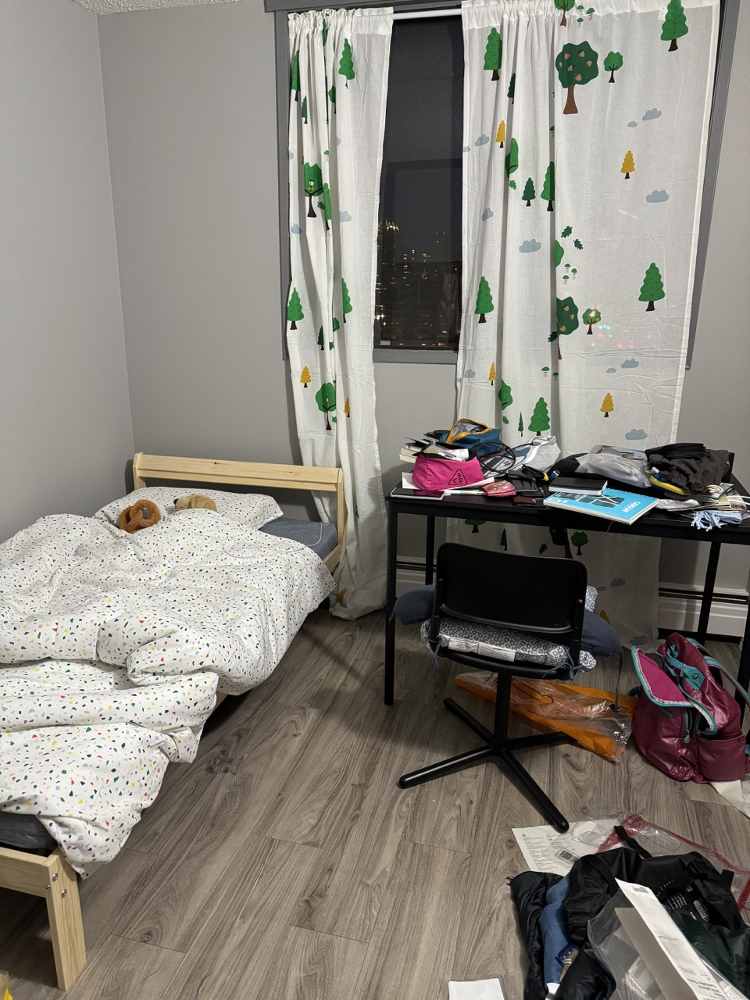
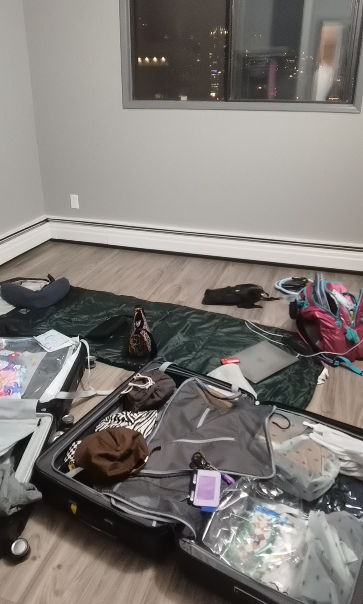
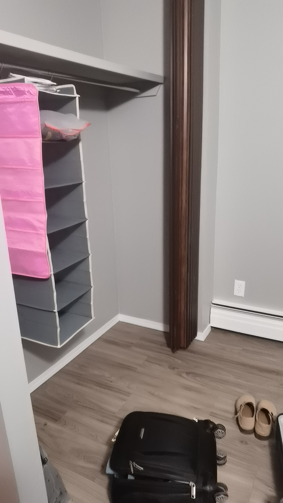

Room A: Apartment-How it started



I brought two big suitcases and one carry-on from home, and I still remember how my mom and I dragged them at 5 in the morning along the gravel road, and how I almost lost strength in the middle of the transfer. (But I was glad I brought the sleeping bag with me so I could sleep the first night, since my room was not furnished.)
From past experiences, I always end up collecting too many things I can't bring back home, so I either have to donate them or throw them away. I tried to control myself, buying and hoarding more, but I already anticipate that I would fail this time during the study of the program...
Love for Ikea is not only because of the prices, but also my mom and I don't feel burden when using.
Anyway, I am glad my room finally feels like a proper resting place after all my Ikea deliveries arrived, and I will for sure feel more grounded once I finish setting up.